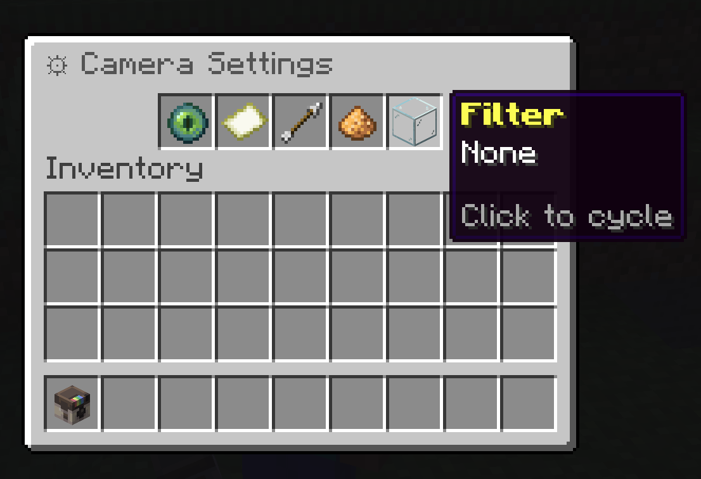
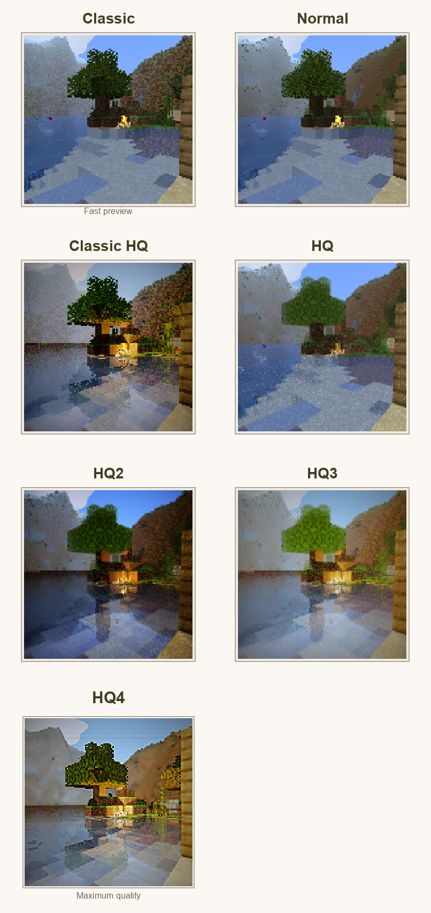
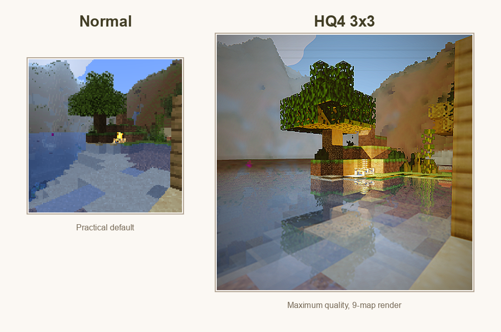
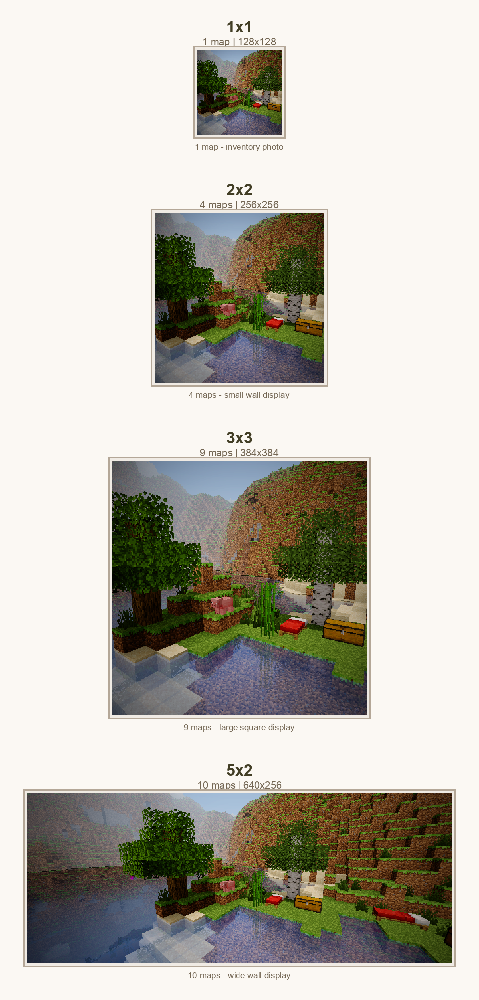
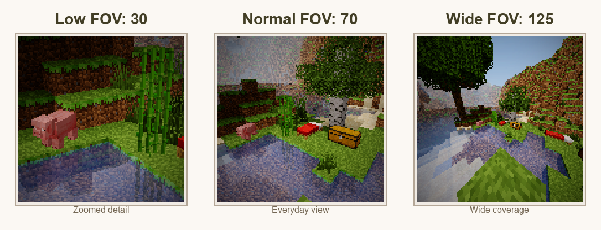
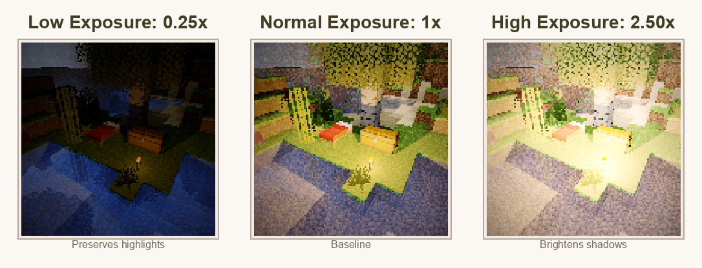
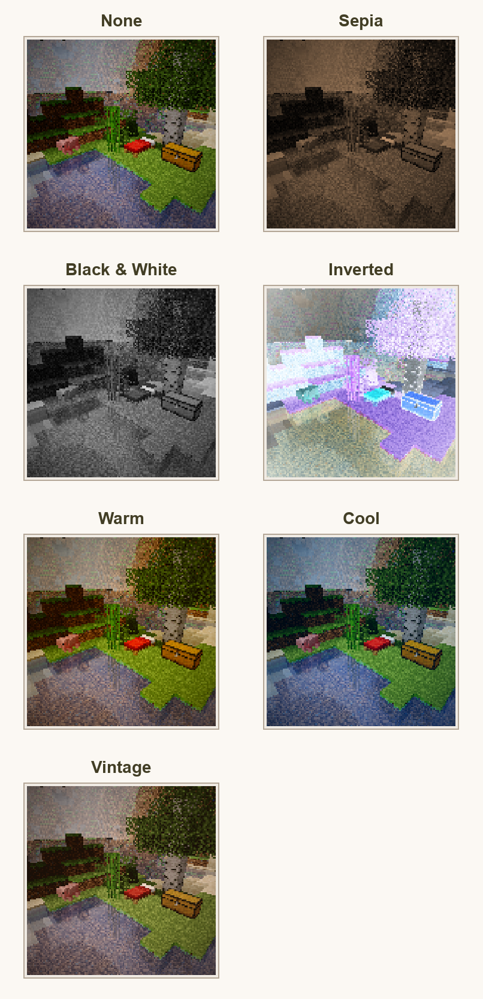
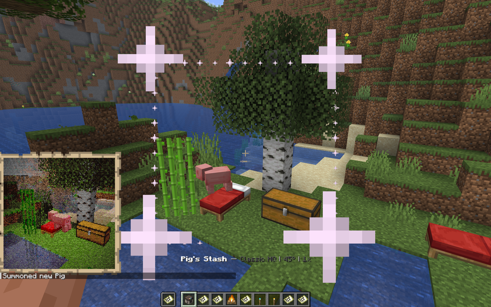

Camera Settings

Use /sb settings or right-click with the camera to tune the next photo before you take it. Settings are per-player, so changing your camera does not change another player's camera.
How To Use The Menu
| Slot | Setting | How To Change It |
|---|---|---|
| Mode | Render profile | Click to cycle. HQ profiles require permission. |
| Size | Photo dimensions | Click to cycle through available map sizes. |
| FOV | Field of view | Left-click to lower by 5, right-click to raise by 5. |
| Exposure | Brightness multiplier | Left-click to lower by 0.25, right-click to raise by 0.25. |
| Filter | Color treatment | Click to cycle through available filters. |
Render Profile
Render profile changes the raytracer used for the shot. Lower profiles are faster and more direct. Higher profiles add more atmosphere, lighting, water treatment, and post-processing.

| Mode | Best For | Notes |
|---|---|---|
| Classic | Fast collection photos and quick previews. | Crisp, simple, closest to the original map look. |
| Normal | Everyday photography. | Balanced quality and speed. |
| Classic HQ | Higher quality classic-style captures. | Requires HQ/cinematic permission. |
| HQ | Showcase shots. | Better lighting and atmosphere. |
| HQ2 | Scenes with water, reflections, or richer lighting. | Requires HQ/cinematic permission. |
| HQ3 | High-end color and tone treatment. | Requires HQ/cinematic permission. |
| HQ4 | Final showcase images. | Maximum quality and longest render time. |

Photo Size
Size controls how many Minecraft map items make up the photo. A single-map photo is easy to carry and use for collection progress. Larger sizes create more detail and are better for walls, galleries, and server showcases.

| Size | Maps | Best For |
|---|---|---|
| 1x1 | 1 | Inventory photos, collection captures, quick sharing. |
| 2x2 | 4 | Small wall displays with clearer detail. |
| 3x3 | 9 | Large square displays and build documentation. |
| 5x2 | 10 | Wide landscapes, banners, and panoramic wall displays. |
Paper cost, when enabled, scales with the number of map tiles.
FOV
FOV means field of view. It controls how much of the world fits into the frame. Lower FOV feels zoomed in. Higher FOV feels wider.

Use low FOV for portraits, mobs, and distant details. Use normal FOV for most photos. Use high FOV for interiors, large builds, group shots, and landscapes. Very high FOV can stretch the edges, so use it when coverage matters more than natural perspective.
Exposure
Exposure controls final brightness. The plugin clamps exposure between 0.25x and 4.0x.

Start near 1.0x, then move up or down one step at a time. A small adjustment is usually enough.
Filters
Filters apply a final color treatment after the photo is rendered. They do not change the world, only the map image.

| Filter | Effect | Good For |
|---|---|---|
| None | No final color effect. | Accurate documentation and normal photos. |
| Sepia | Warm old-photo tone. | Historical builds, cozy scenes, albums. |
| Black & White | Removes color. | Architecture, contrast, dramatic shots. |
| Inverted | Reverses colors. | Experimental or event images. |
| Warm | Warmer orange tone. | Sunsets, villages, interiors. |
| Cool | Cooler blue tone. | Snow, night, ocean, End scenes. |
| Vintage | Aged color treatment. | Postcards and collection-style photos. |
Viewfinder

Left-click while holding the camera to show the viewfinder. Use it to check whether the subject is in frame, whether the FOV is too tight or too wide, and whether a larger photo size will capture the full scene.
When the frame looks right, sneak and right-click to take a photo. Sneak and left-click to take a selfie.
Paper Cost
If consume-paper is enabled, ShutterBug consumes paper when photos are taken in survival-style play. The cost is based on server configuration and the number of map tiles in the photo.

Typical behavior:
- Single-map photos cost less.
- Larger photos create more map tiles.
- Creative or spectator players may be exempt.
/sb helpcan show current paper cost when it applies.
Practical Presets
| Goal | Suggested Settings |
|---|---|
| Fast collection photo | Normal, 1x1, FOV 70, exposure 1.0x, no filter. |
| Player portrait | Normal or HQ, low FOV, exposure adjusted for face lighting. |
| Large build | Normal/HQ, larger size, FOV 80-100. |
| Dark cave | Normal/HQ, exposure 1.25x-2.0x, no filter or warm filter. |
| Showcase render | Highest mode you can use, size chosen for display, FOV tuned to scene. |